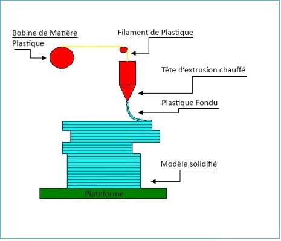
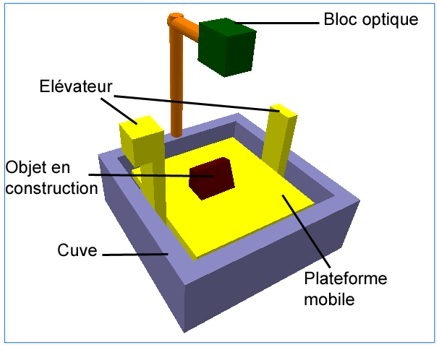
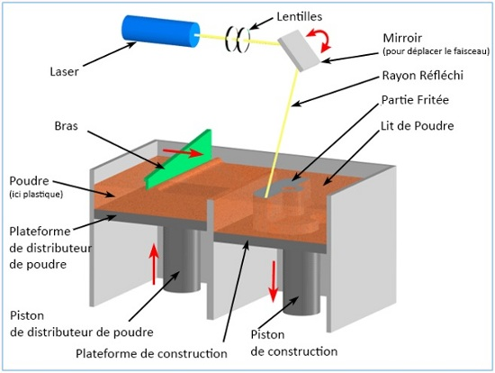

L’impression tridimensionnelle est une technique d’impression ‘’additive’’. En effet l’imprimante va travailler par superposition de couches de matière (plus ou moins fines, de l’ordre du micromètre). Il existe trois technologies d’impressions tridimensionnelles principales :
• Le F.D.M (Fuse Deposition Modeling) ou communément appelé «La méthode de l’araignée » : l’élément essentiel de l’imprimante est la tête d’impression. Elle transporte un fil de matière qui se déroule depuis une bobine. La tête d’impression chauffe l’extrémité du fil et le fond. Etant sur un bras mobile, elle dépose ce fil fondu en dessinant les motifs de la couche. La température de chauffe varie de 80°C à 190°C (suivant le plastique utilisé). La matière est déposée en ‘’nid d’abeille’’, ce qui permet de produire des pièces légères, résistantes et économes en matériaux.

Schéma d'explication du FDM (Copyright CustomPartNet)
• Le S.L.A (StereoLithography Apparatus) ou la méthode dite ‘’de la Méduse’’ : la plateforme sur laquelle va être imprimé l’objet s’enfonce dans une cuve de résine liquide, de la hauteur d’une couche de matière. Ensuite, un rayon laser dessine le motif de la couche sur la surface liquide. Au contact de cette lumière, le liquide devient solide.

Schéma d'explication du SLA (Copyright CustomPartNet)
• Le S.L.S (Selective Laser Sintering) ou encore appelé la ‘’méthode du potier’’ : le matériau de base est une poudre qui se solidifie sous l’effet de la chaleur. Un laser apporte de la chaleur sur une très petite surface. A cet endroit la poudre va s’agglomérer et former un solide compact. Dans ce procédé, trois étapes se répètent : un réservoir dépose une fine couche de poudre sur toute une surface puis un bras mécanique muni d’un laser (bloc optique) dessine le motif et enfin un nouveau film de poudre est déposé avant que le laser ne dessine la couche suivante.

Schéma d'explication du SLS (Copyright CustomPartNet)
On remarque donc une similitude dans ces différentes méthodes d’impressions que l’on peut brièvement résumer ainsi :
• Modélisation de l’objet dans un logiciel de C.A.O,
• Envoi des données à l’imprimante 3D,
• Découpe de l'objet virtuel tridimensionnel en lamelles 2D d'épaisseur très fine,
• Superposition des lamelles extrafines les unes après les autres : selon la technique, la superposition peut se faire :
- grâce à un fil de matériau d'un 10ème de millimètre chauffé par une buse ;
- grâce à une couche de résine ou une poudre photopolymère déposée sur un film transparent qui se durcit quand l'image de la coupe en 2D est projetée dessus. Cette technique est la stéréolithographie ;
- grâce à une résine liquide appliquée de la même manière qu'une imprimante jet d'encre.
• Reconstitution de l'objet réel.